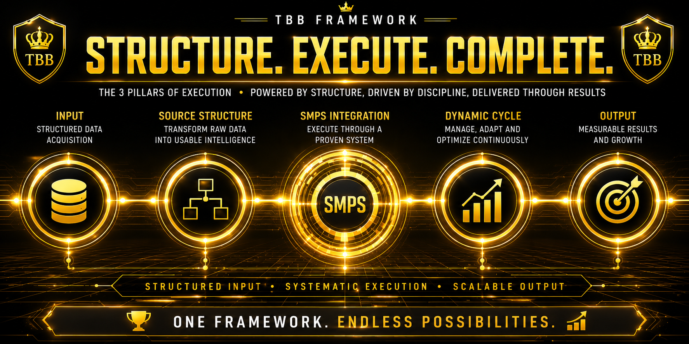

A structured execution environment that transforms a selected source structure into a controlled deployment framework through disciplined positioning, exposure management, and operational continuity.
Every execution cycle begins with a selected source structure. The framework receives the input and prepares it for structured transformation. The objective is consistency, not randomness.
The source structure is mathematically expanded into a broader deployment framework. This process transforms a limited input into a controlled execution environment capable of supporting multiple operational decisions.
Determine deployment capital before execution begins.
Monitor operational exposure and remaining capacity.
Calculate projected gross returns and profitability.
Maintain predefined execution boundaries.
Track progression through the operational cycle.
Maintain structured continuity throughout deployment.
Monitor available operational room in real time.
Maintain visibility of every active execution cycle.